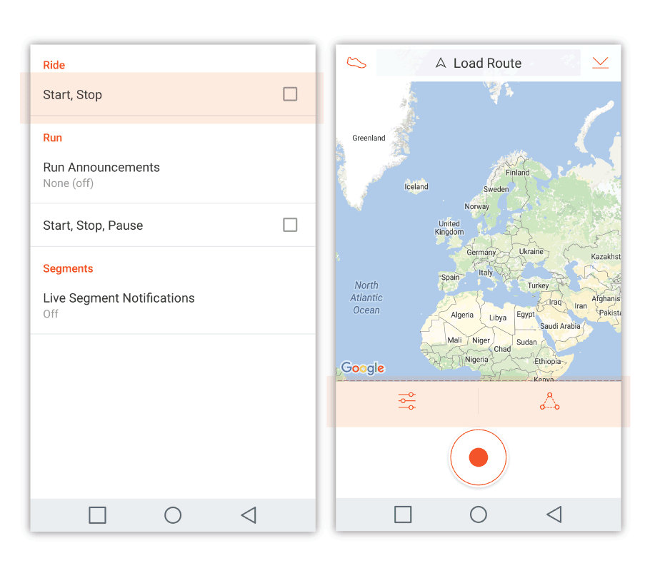
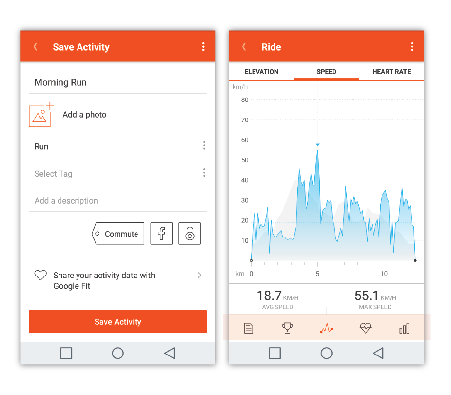
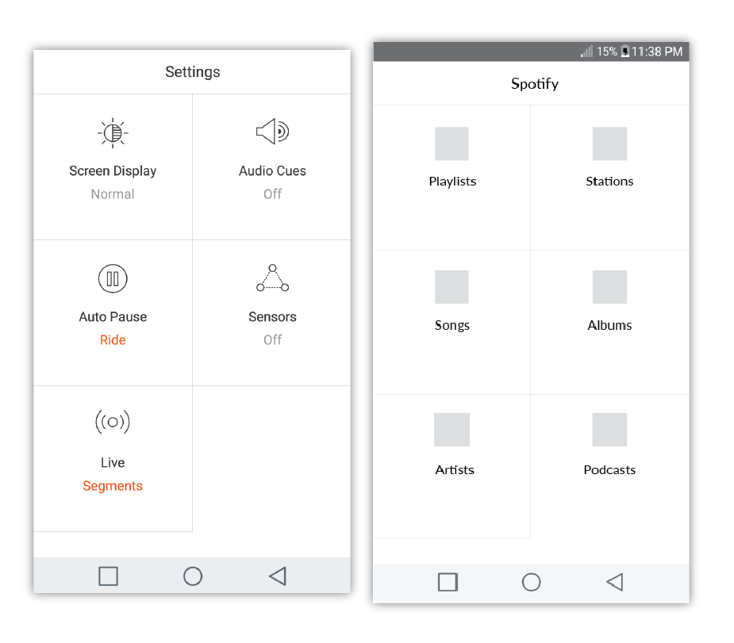

School Project.
Research and analyze Strava to gain insights about the app. Find out where the gaps are between the users' and their goal. When opportunity is found, use it to add value to Strava.
Only analyzed Strava on Android smart phones.
Michaela Tsumura, Mandy Cheung
The new screens that would implement the new feature is split evenly amongst ourselvevs. I did the mockups for accessing the music feature through Strava and the screens for after a run/cycle. We separately did research and compared our findings. Then we came together to analyze and brainstorm the direction Strava should move towards to gain value.
Activity Analysis: "List in detail all actions, tasks, objects, performers and interaction involved in a process." We chose this analysis method as one of our research methods because we didn't know much about Strava so by going through all possible actions and listing them, we will get to know the app a lot better.
Extreme User Interview: In order to find out more about how users use and feel about Strava, we made a questionnaire using Google Survey and conducted a survey with people that used Strava frequently. The results were quite intruiting.
Insights
Opportunities
Between the three choices, we decided to go with integrating a music feature. This is because Strava lacks a music feature that a lot of their competitors already have.
Not everyone have mp3 files readily downloaded on phones these days, people mainly use streaming services to access music. It doesn't make sense for Strava to make their own music service, so collborating with a music streaming service is probably best for Strava.
However, just having music integration doesn't give enough value to stand out from their competitors. A feature that could be paired with the music integration is to get results after a run about how certain songs, playlists, albums affect your run/cycle. Another feature could be to set a certain beat you like to run to, and only have songs play with that beat.
We analyzed the design elements in the Strava's Android app, like flow of the app, buttons, navigation bars and typography. In order to keep consistent between the two brands, we analyzed Spotify's Android app as well.
For consistency's sake, Strava's color scheme was kept and Spotify's music interface structure and gestures were kept.This way, Spotify users that decide to use Strava will not have to learn a new interface; and vice versa, when a Strava user decides to use Spotify, they also won't have to learn a new interface.
(left) Screen: Login | (right) drop down nav bar
(left) Checkboxes | (right) Screen: start a run
(left) Screen: save activity | (right) Statistics bar and bottom nav
Initial iteration of mockups for music feature implementation. We mainly focused on making sure the flow of the app isn't lost after music implementation.
We had to solve problems such as, how will the user connect to Spotify on Strava and where in the navigation drop down would best suit the option for music.
Low Fidelity Mockups
Keeping consistent with Strava's colour schemes and icons.
Problem encountered
Some of the spacing in the low fidelity mockups were too large, therefore; when we put the real icons in, it looked out of place. Adjustments to the layout and concept had to be made.
High Fidelity Mockups
Transfer from low fidelity mockups to high fidelity mock ups doesn't work because change of concept
We realized that it doesn't make sense to implement the WHOLE Spotify app into Strava, if we did that then it's not a "collaboration", therefore in Strava you only get to select playlists that you made in Spotify, and you can import it into Strava to run to. This way it's beneficial for both Spotify and Strava.
Overall, I am very happy with the result of this project, I felt that ever step made sense and it will add value to both companies, Strava and Spotify. Users from Spotify can cross over to Strava and Strava users will be encouraged to use Spotify.
A problem that can come up is that if Strava users use other streaming companies like Pandora or Apple Music will be upset.